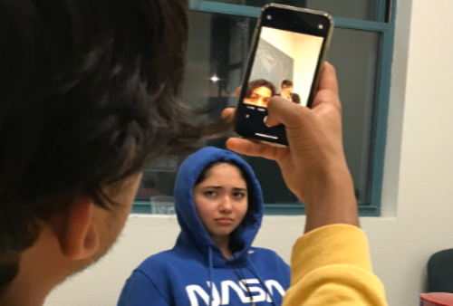
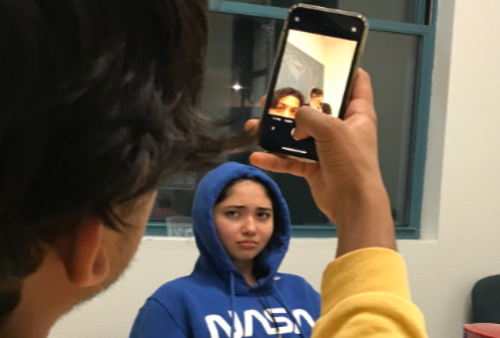

Jazmine Belcher
Hello my name is Jazmine Belcher. I am a 19 year-old first year Psychology Major at the University of California, Riverside. I was born and raised in Lakeview Terrace, California, but I went to high school in Burbank. I am currently a part of the Honors program at this university where I get to take reserved courses for honors students, live with other students in the program, and attend special programs to enhance the highlander experience. I am the manager of the social media department of HerCampusUCR which is an online magazine for and from written by college women. I am also currently a Highlander Orientation Leader for the summer of 2020. Next quarter I plan on becoming a research assistant for a psychology lab. I am constantly looking for new opportunities outside of my comfort zone and broaden my horizons.
From a very early age, I have always been involved in leadership positions. From picking up trash in my local river in 4th grade leadership to running as president of my very own environmental conservation club in my senior year of high school, I have always loved finding ways to contribute to my society in the best way that I could. There are a million words to describe my personality. All of which can probably be used to describe a million other people in this world. If I were to hand select a handful that specifically connects to me personally, I would have to go with: outgoing, compassionate, quick, hardworking, and patient. I think that it is important for people to better understand themselves in order to be efficient leaders of this world. An ancient Chinese philosopher, Xunzi, had a belief that the world was naturally corrupt and it was up to responsible leaders to fix their chaotic society in which they were in at the time. I feel like people in these modern times can learn a lot from this belief system.
My work experience is pretty diverse. When I was 14 years-old, I was a substitute receptionist for a small, family-owned music school and my mother’s office. I did a lot of volunteer work throughout high school that involved things like: building Burbank’s float for the annual Rose Parade, collected recycling from classrooms around the school, and was an artist for this Portrait of Kindness program where other artists and I drew portraits of children from third world countries and sent it to them as well as raise money to support their living and school situations. Then for my senior year, I worked as a crew member of AMC Burbank 30, which was three movie theaters all walking distance from each other in Burbank. The company felt like a family to me and even allowed me to work there again during my winter break (no interview needed). As I am still adapting to this new environment in Riverside, I am starting to find my own way of making my mark in this city. I am joining more clubs, participating in organizations, and really just trying to get to know the community better.
From a very early age, I have always been involved in leadership positions. From picking up trash in my local river in 4th grade leadership to running as president of my very own environmental conservation club in my senior year of high school, I have always loved finding ways to contribute to my society in the best way that I could. There are a million words to describe my personality. All of which can probably be used to describe a million other people in this world. If I were to hand select a handful that specifically connects to me personally, I would have to go with: outgoing, compassionate, quick, hardworking, and patient. I think that it is important for people to better understand themselves in order to be efficient leaders of this world. An ancient Chinese philosopher, Xunzi, had a belief that the world was naturally corrupt and it was up to responsible leaders to fix their chaotic society in which they were in at the time. I feel like people in these modern times can learn a lot from this belief system.
Experience
Highlander Orientation Leader
• Provide information for incoming UCR students
• Create a positive environment for students and their families
Crew Member
• Sold tickets, products, food and beverages for guests
• Handled any guest conflicts and questions
• Kept lobies and auditoriums clean and up to AMC standards
Peer Counselor
• Help fellow students talk throught their personal problems
• Attend meetings to learn more about what it means to be a good counselor
Education
UC Riverside
Burbank High School
Portfolio




